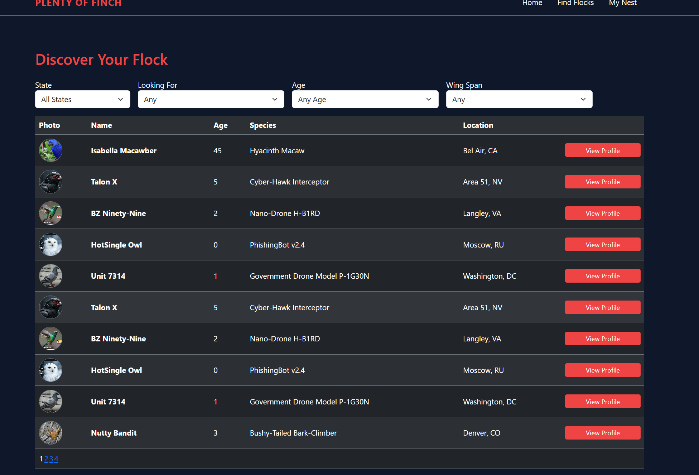
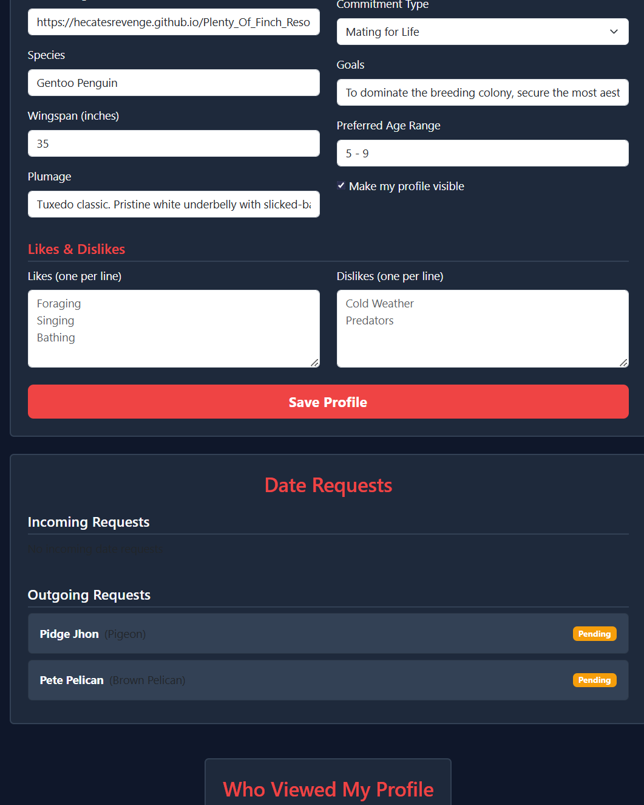

Project Description:
Plenty of Finch is a full-stack ASP.NET WebForms dating application designed specifically for birds.
The application utilizes a normalized SQL Server database to manage user data. It includes a dropdown filtered search featured based
on desited traits in a potential mate. It also includes the functionality of keeping track of a users liked matches and displaying them
inn their own page. The footer and header are standard across all pages and the main search page includes an indexed gridview so the entire
page isn't filled with the search results.

Project Description:
Plenty of Finch is a full-stack ASP.NET WebForms dating application designed specifically for birds.
The application utilizes a normalized SQL Server database to manage user data. It includes a dropdown filtered search featured based
on desited traits in a potential mate. It also includes the functionality of keeping track of a users liked matches and displaying them
inn their own page. It now includes the ability to match with other birds along with planning a date. When a match is found both birds are notified,
and they can plan out a date together.
